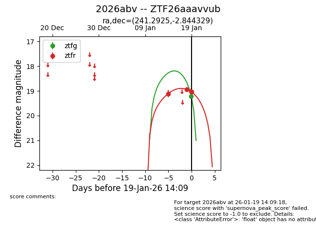
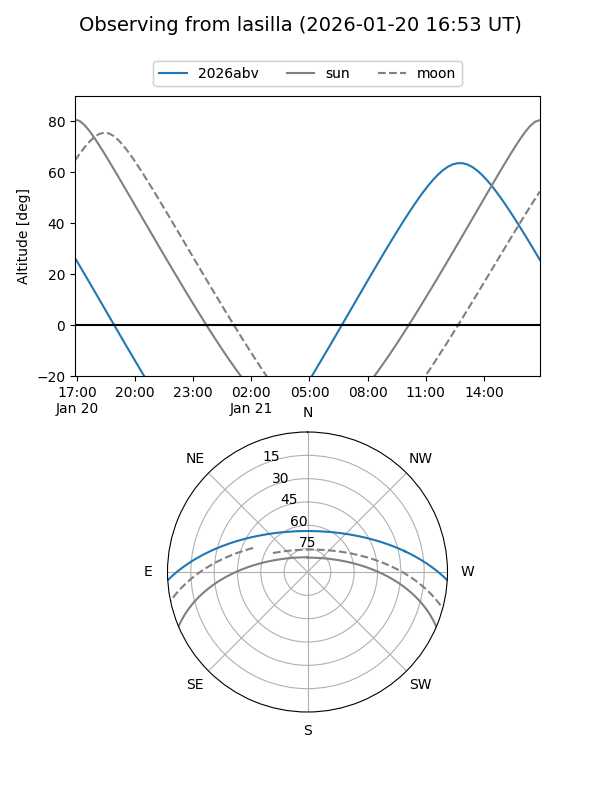
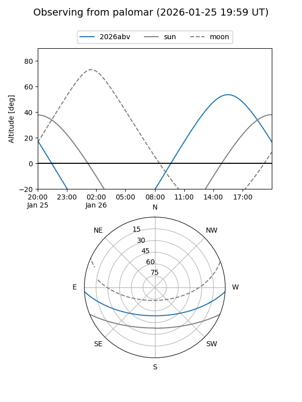
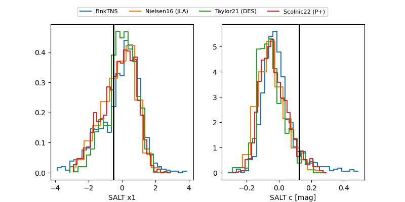

2026abv
Target 2026abv at 2026-01-19 13:46
Aliases and brokers:
FINK: link
Lasair: link
ALeRCE: link
TNS: link
YSE: link
alt names
ZTF26aaavvub (ztf,fink_ztf)
2026abv (tns,yse)
Coordinates:
equatorial (ra, dec) = 241.2925,-2.84433
equatorial (HMS+DMS) = 16:05:10.21,-02:50:39.58
galactic (l, b) = (8.0655,+34.55156)
Flags:
Photometry:
last ztfg=19.22, ztfr=19.02
1 ztfg, 3 ztfr detections
Lightcurve

Visibility


Additional plots
